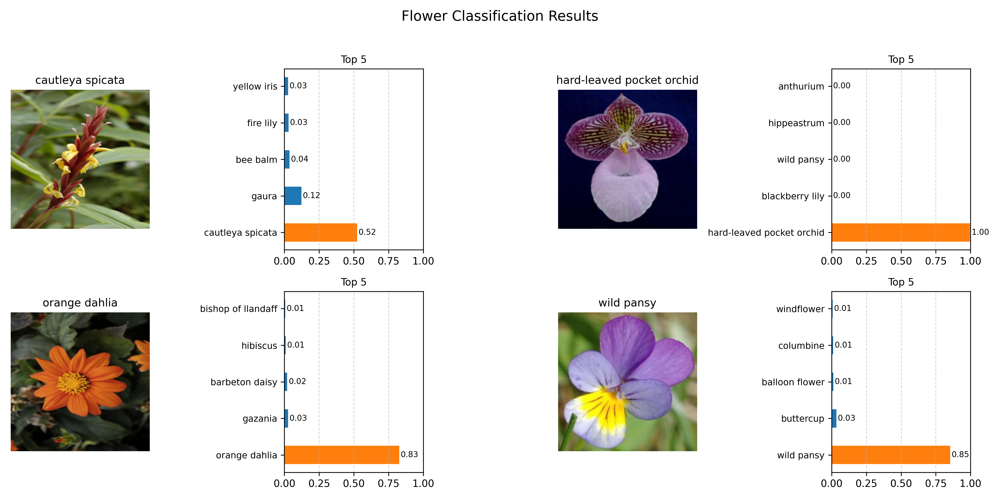

Description
AI is increasingly integrated into applications for example, a smartphone app can identify flowers from a camera image. This project trains an image classifier to recognize 102 species of flowers using deep learning. We leverage a pretrained convolutional neural network (MobileNetV2) and adapt it for our task via transfer learning.
The model is trained on the Oxford Flowers 102 dataset, which contains 102 flower categories (examples shown above). After training, we use the model for inference on new images.
Goal:
Build and train a PyTorch-based image classifier to identify flower species using transfer learning.
Check My - Jupyter notebook.Dataset
The Oxford Flowers 102 dataset is a consistent of 102 flower categories commonly occurring in the United Kingdom. Each class consists of between 40 and 258 images. The images have large scale, pose and light variations. In addition, there are categories that have large variations within the category and several very similar categories.
Data Exploration
The dataset has three splits (train, validation, test):
- Training images: 1020
- Validation images: 1020
- Test images: 6149
- Number of classes: 102
All images are resized to 224 × 224 pixels and normalized (pixel values scaled to [0, 1] and standardized using ImageNet mean/std) to match the input requirements of the model.
Shape and Corresponding Label

- Image shape: (500, 667, 3)
- Label: 72
- Class name: water lily
Build and Train the Classifier
Model Architecture
We use MobileNetV2 pretrained on ImageNet as the base model. The feature extraction layers are frozen, and the final classifier layer is replaced to match 102 flower classes. This transfer learning approach enables efficient training while leveraging powerful learned features.
Model Summary
- Total parameters: 3,504,872
- Trainable parameters: 130,662
- Non-trainable (frozen) parameters: 3,374,210
Training
The model is trained using PyTorch. We use the CrossEntropyLoss function and the Adam optimizer, and we monitor training and validation accuracy and loss during training.
Training Performance
Example plot of training and validation loss/accuracy over epochs:
Trained Model
The trained model weights are saved as a PyTorch checkpoint file (`.pth`). This allows the model to be reloaded later for inference without retraining.
Evaluation (Test Set)
The model is evaluated on the held-out test set to measure performance on unseen data.
- Test accuracy: 81.786% (example)
- Test loss: 1.1552 (example)
Final Output
Finally, we use the trained model to make predictions on new flower images. The output shows the input image alongside a bar chart of the top predicted classes and their probabilities.
